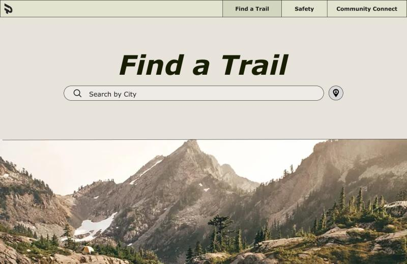
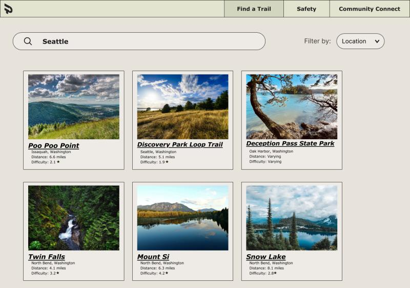
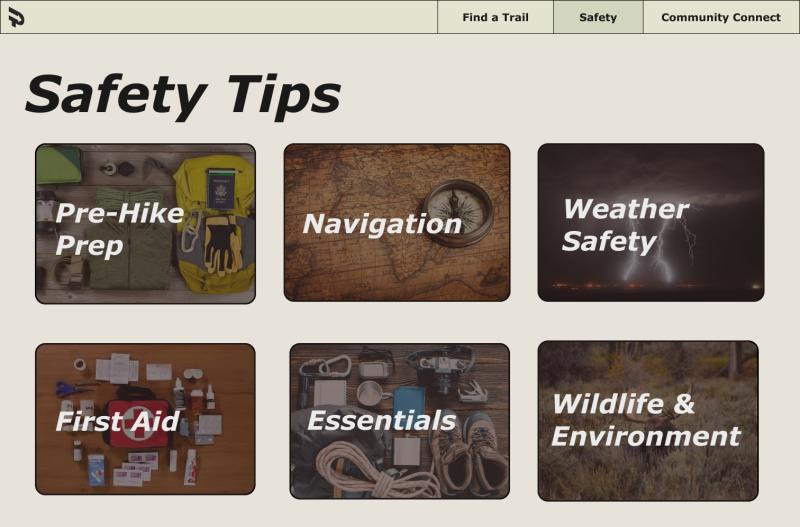
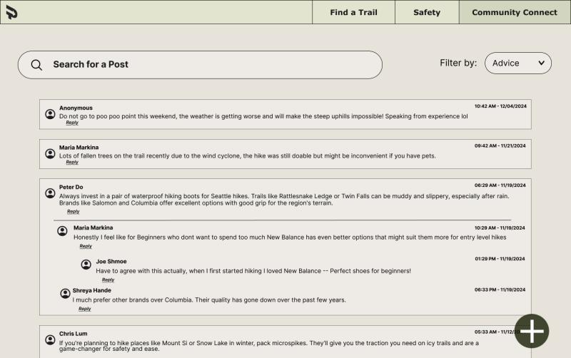
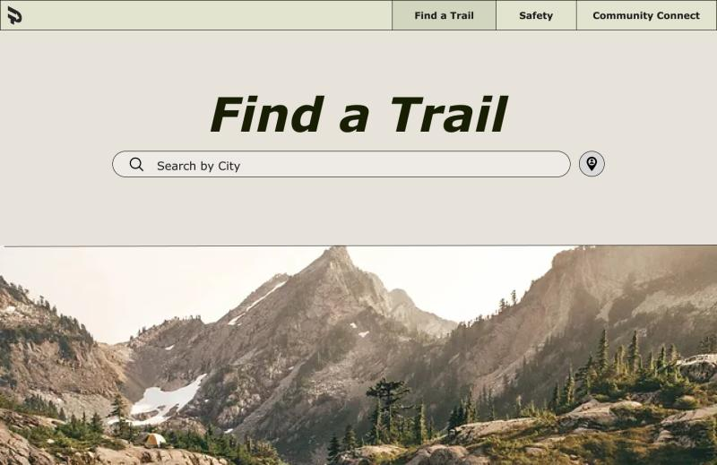
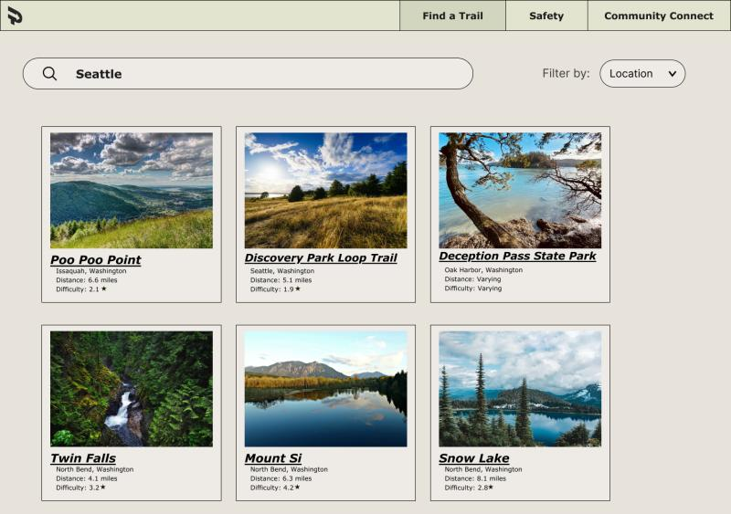
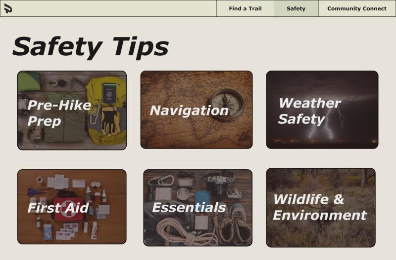
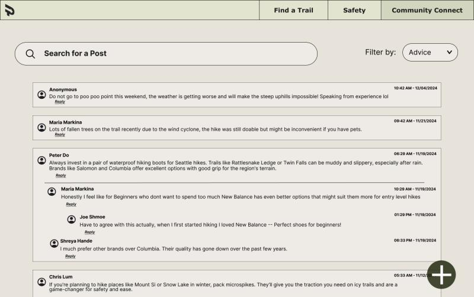

Projects
Impact of Population on Unemployment Analysis
For my class project, me and my group looked at U.S. unemployment and population data to see how things like population density might affect job rates. Using R and ggplot, I built interactive charts, scatterplots, heatmaps, and histograms to spot patterns across states. It is all wrapped up into a Quarto doc and I found a 15% correlation between how populated a place is and how many people are out of work.
.png)
.png)
Pathfinder UW
Pathfinder is a comprehensive website tailored to new hikers, designed to centralize resources and provide an interactive and engaging experience. The website has three primary sections: Trail Recommendations, Safety and Preparation, and Community Feedback. The Trail Recommendations section features filters for location, difficulty, altitude, and length, making it easier for users to discover hikes suited to their preferences and needs. The Safety and Preparation section consists of tips on selecting suitable gear, preparing for weather conditions, and links to CPR and first aid courses available online or in their area. Finally, the Community Feedback tab serves as a platform for hikers to share stories, ask questions, and learn from each other's experiences. It supports beginner hikers in building confidence, fostering connections, and enjoying the outdoors safely and responsibly.
 







Find a Study Spot UW
I designed a mobile app prototype in Figma to help UW students locate ideal study spaces using real-time filters like noise level, crowd size, and hours. Integrated interactive maps and personalization features, and validated the design through user interviews and iterative feedback.


Skills
Languages
- Java
- Python
- HTML, CSS, JavaScript
- R
Tools & Frameworks
- Figma
- VS Code
- Git
- ggplot
Concepts & Strengths
- Algorithms & Data Structures
- Game Logic
- Data Visualization
- Workflow Optimization
- Agile